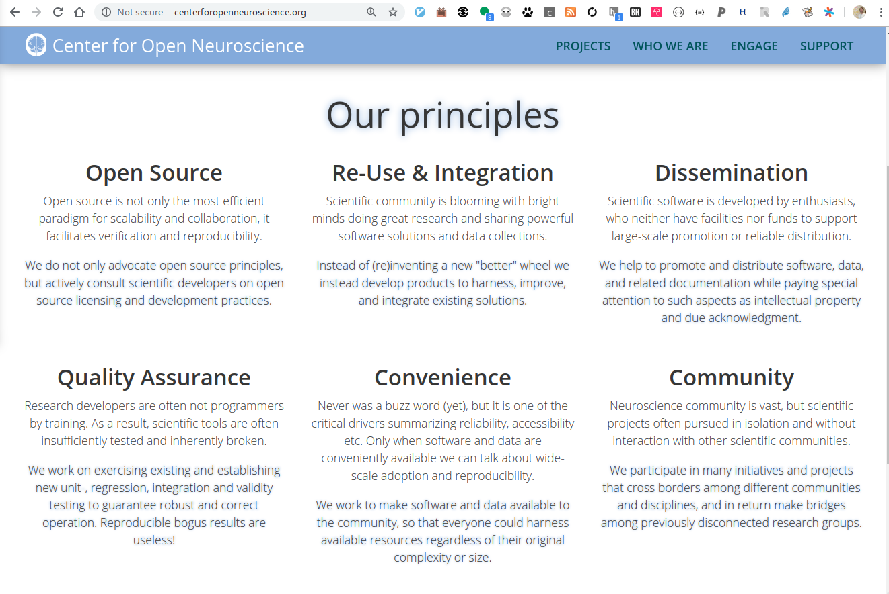
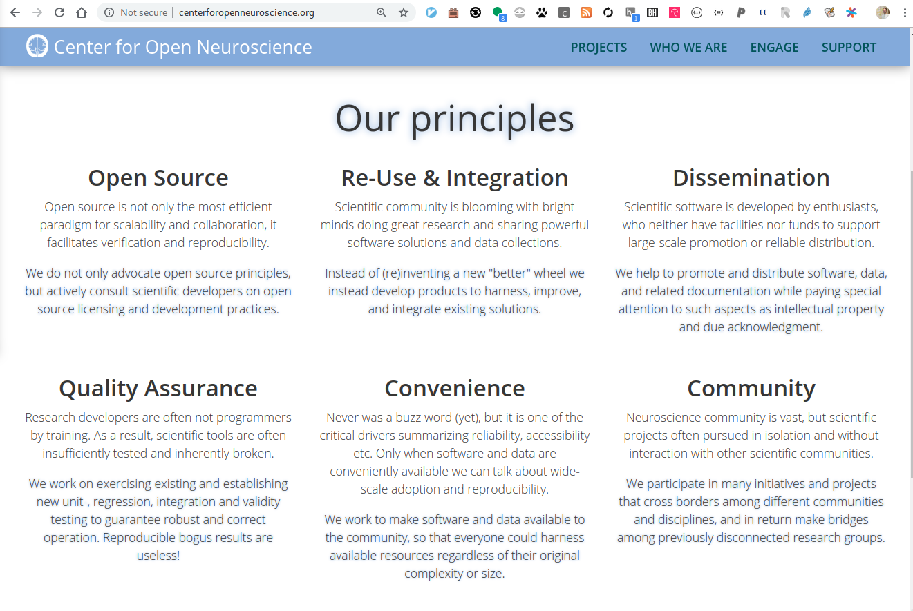

Building an Archive for Large-scale Neuroscience Data
Yaroslav O. Halchenko @yarikoptic @yarikoptic
|
|
|
Center for Open Neuroscience Department of Psychological and Brain Sciences Center for Cognitive Neuroscience Dartmouth College 
|


Who am I?

Brief Bio
Born in Siberia (RSFSR, USSR), Grew up in Ukraine, Matured in U.S.A.
- -1994 Physics Mathematics Gymnasium #17 (Ukraine):
Regional&State Physics and Programming competitions. MS-DOS. Borland Pascal - -1999 VSTU (Ukraine):
Masters in Opto-Electronic Engineering
(@yarikoptic). State Physics and International ACM Programming competitions. Spine diagnostic apparatus. Member of "Small Academy of Science of Ukraine". SPIE. Soros Fellowship (twice). MS-DOS/Windows. Borland Pascal, Delphi, VBA - -2003 University of New Mexico:
Masters in Computer Science
B.Pearlmutter. SOBI/JADE ICA for single trial MEG. Favorite course: Data structures and algorithms. Debian GNU/Linux. C, Matlab, shell. CVS - -2009 Rutgers-Newark/NJIT:
Ph.D. in Computer Science
S.Hanson. fMRI decoding (RFE SVM). RUMBA. HPC sysadmin (cfengine, PBS). M.Hanke. Debian pkg-exppsy (for FSL and PyEPL). Official Debian developer. fMRI/EEG (TRANS)fusion. PyMVPA. C++, Python. SVN, GIT. 1 wife, 3 kids - - NOW Dartmouth College, PBS Department:
Postdoc, Scientist, Research Assistant/Associate Professor
J.Haxby. PyMVPA (Hyperalignment, ...), NeuroDebian, DataLad, ReproNim, DANDI, ... Chicken Coop, ... CON:
 

Ingredients needed to build an archive
- People
- Standards
- FOSS
- Automations
Standards make DANDI FAIR

Standard for neurophysiology data (sessions): NWB

Just ask Oliver & Ryan around the corner: https://www.nwb.org/nwb-neurophysiology/
Standard for neural datasets: BIDS
Gorgolewski, K. J., Auer, T., Calhoun, V. D., Craddock, R. C., Das, S., Duff, E. P., Flandin, G., Ghosh, S. S., Glatard, T., Halchenko, Y. O., Handwerker, D. A., Hanke, M., Keator, D., Li, X., Michael, Z., Maumet, C., Nichols, B. N., Nichols, T. E., Pellman, J., Poline, J.-B., Rokem, A., Schaefer, G., Sochat, V., Triplett, W., Turner, J. A., Varoquaux, G., and Poldrack, R. A. (2016). The brain imaging data structure, a format for organizing and describing outputs of neuroimaging experiments. Scientific Data, 3:160044
BIDS ...
- standardizes at the level of the dataset
- is intended to be boring: you have seen one BIDS dataset -- you have seen them all!
- e.g., skim through https://github.com/OpenNeuroDatasets
- is both human- and machine- friendly
- From 1.7.0 WiP to make BIDS specification itself machine readable!
- In part inspired by the NWB schema. Cross-standard work is ongoing
- Schema avoids necessity for hard-coding BIDS in client software
- Questions about schema/standards versioning and upgrades remain a taboo
- compliance could be automatically verified using bids-validator BIDS-App
- is enhanced through BIDS Enhancement Proposals (BEPs),
we participate in them to improve BIDS for DANDI archive- BEP028: Provenance (WiP)
- BEP031: Microscopy (done)
- BEP032: Animal electrophysiology (WiP)
BIDS is "meta"standard

One more "Standard": DANDI schema

Overall: Standards ...
- are needed for FAIR archives
- are a common language for users and computers
- can compose of other standards
- are evolving
DANDI is a FOSS platform

DANDI integrates with external resources